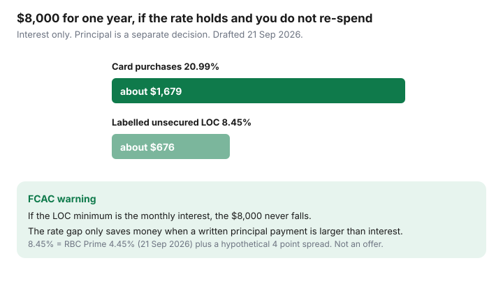

Personal Finance · Canada
Line of Credit vs Credit Cards in Canada: When Consolidation Saves Interest (and When It Backfires)
Moving a card balance to a line of credit feels like a finished decision. The rate drops, the minimum shrinks, and the cards show zero — until the cards get used again and the line is paid interest-only. The Financial Consumer Agency of Canada describes the trap in one sentence: you pay interest from the day you withdraw, the minimum is usually the monthly interest, and paying only the interest means you never pay off the debt. Consolidation saves money when the rate gap is real and a principal schedule starts the same day. It backfires when the empty cards become a second spending limit.
Disclosure: This is education, not a loan offer, mortgage recommendation, or insolvency plan. We do not promote payday loans, debt-settlement companies, or credit-repair firms. A line of credit is approved or declined by a lender from your file. Nothing here is that approval.
Key takeaways
- On a labelled $8,000, one year at 20.99% is about $1,679 of interest. One year at a labelled 8.45% is about $676. The gap is about $1,000 only if the balance does not grow.
- FCAC: an interest-only line minimum never retires principal. Scotiabank’s public ScotiaLine description, for people who qualify, sets an interest-only minimum at the greater of the interest or $50.
- Freeze new card spending before the transfer. A consolidation that leaves the cards open and active is two debts.
- Opening or drawing a line can be a hard inquiry and a new utilization number. A maxed line is not a score victory.
- A HELOC puts consumer debt on the house. OSFI’s expectation for federally regulated lenders is a revolving portion at or below 65% loan-to-value.
Rate gap reality: cards vs unsecured LOC vs HELOC risk
Credit-card purchase rates at the big banks are often posted in the high teens or around 21%, with cash advances higher and a penalty rate if you miss minimums. RBC’s credit-card agreement change notice set the standard annual interest rate on purchases at 20.99% (cash advances 22.99%) for the retail cards listed in that notice, effective from the April 2023 change. Low-rate cards are lower. Your statement is the number that counts; the notice is a public benchmark, reviewed 21 Sep 2026, not a quote for every card in a wallet.
An unsecured personal line is usually priced as prime plus a spread the lender sets from your file. RBC’s Royal Credit Line page, used 21 Sep 2026, shows RBC Prime at 4.450% and says the rate is variable with that prime. It does not publish one unsecured spread. The Bank of Canada held the overnight target at 2.25% on 2 September 2026 (next scheduled decision 28 October 2026), which is why prime has been sitting at 4.45% in public roundups. A labelled comparison on this page uses prime plus 4.00 points = 8.45%. That spread is a teaching number. Your offer might be tighter or much wider. Secured pricing, including a HELOC, is often closer to prime — and the collateral is the home.

| Wrapper | Rate used | Interest if the balance stays $8,000 for a year |
|---|---|---|
| Card purchases | 20.99% (public RBC benchmark) | about $1,679 |
| Unsecured line, labelled | 8.45% (4.45% prime + 4 points, hypothetical) | about $676 |
| Gap | Only if you do not re-borrow | about $1,003 |
FCAC basics: interest-only LOC minimums never retire principal
FCAC’s lines-of-credit page: you pay interest from the withdrawal date until the balance is paid in full, there is typically no grace period of the kind cards give pay-in-full users, and the monthly minimum is usually the interest. Scotiabank’s ScotiaLine page says payments can be as low as interest only if you qualify, and spells the minimum as the greater of the interest or $50, plus anything overdue. A $50 floor on a small balance is still not a payoff plan.
Work a principal number on paper before you transfer. On the labelled 8.45% line, interest on $8,000 is about $56 a month. A $250 payment retires about $194 of principal in month one and finishes far sooner than interest-only, which finishes never. Put that $250 in the same calendar slot as the payday skim, or it will lose to groceries. Order of attack if several debts remain: snowball, avalanche, or hybrid.
Consolidation checklist: close the spending leak first
- List every card: balance, rate, limit, minimum, and whether it is in a wallet or a saved browser.
- Stop new charges. Freeze the cards in the app, remove them from delivery accounts, and move pre-authorized bills to the chequing account that holds the float (NSF design).
- Transfer a defined amount, not “up to the limit.” Leave unused line room out of the plan so a bad month does not become a larger balance by default.
- Set the automatic payment above the interest on day one. If the lender’s minimum is interest-only, your automatic payment is a choice you add on top.
- Decide what happens to the card limits. Closing a zero-balance card can raise utilization on what remains. Lowering a limit after the balance is gone is a behaviour tool. Do it on purpose, and read the score effect in the next section before you close the oldest card in the house.
Credit score and utilization effects when you open or draw a LOC
Applying for the line is generally a hard inquiry. Ordering your own report is not (FCAC). Moving $8,000 off cards can drop card utilization, which is one of the inputs scoring models actually use, and it can raise utilization on the new line by the same dollars. A line drawn to 90% of its limit is not a cosmetic improvement. Check both Equifax and TransUnion yourself — the free paths are in how to check your credit report — before the application and again after the transfer posts. Do not pay a company to dispute a hard inquiry you authorized.
HELOC warning: do not turn consumer debt into housing risk lightly
A home equity line is cheaper for a reason: the house secures it. OSFI’s residential mortgage guideline expects federally regulated lenders to keep the non-amortizing HELOC component at a maximum authorized loan-to-value of 65% or less. Credit above that is supposed to be amortizing, not a revolving top-up you can re-borrow forever. Using that revolving room to clear a card can be rational for a household that will pay principal and will not refill the cards. It is a poor trade if a job gap would put the mortgage and the old card debt in the same default. This page does not shop HELOC rates. Mortgage structure lives with Housing; the personal-finance point is the collateral.
Written payoff schedule after consolidation day one
Write this on the day of the transfer, while the rate gap is still motivating. Example for the labelled $8,000 at 8.45%, payment $250, interest recalculated monthly as the balance falls (teaching schedule, not an amortization the lender will print):
| Month | Rough interest | Rough principal inside $250 | Balance direction |
|---|---|---|---|
| 1 | about $56 | about $194 | Down from $8,000 |
| 6 | Lower, because the balance is lower | More than $194 | Still on the same $250 |
| If prime rises | Rewrite the interest line | Keep the dollar payment, or the principal shrinks | Do this within a week of a Bank of Canada move |
Review the schedule every six months alongside the debt-versus-TFSA order. A line at 8% and a card you refilled at 21% is the original problem with extra steps.
Sources & date stamps
- FCAC, Lines of credit — interest from the withdrawal date; minimum usually equals monthly interest; interest-only does not retire principal (used 21 Sep 2026).
- Bank of Canada — overnight target 2.25% on 2 September 2026; next date 28 October 2026.
- RBC Royal Credit Line — Prime 4.450% displayed; unsecured rate variable with prime (used 21 Sep 2026).
- RBC credit-card agreement change notice — standard purchase rate 20.99% and cash-advance rate 22.99% on listed retail cards from the April 2023 change (notice reviewed 21 Sep 2026; confirm your current agreement).
- Scotiabank ScotiaLine — interest-only minimum described as the greater of interest or $50 if you qualify (page used 21 Sep 2026).
- OSFI Guideline B-20 — non-amortizing HELOC component expected at or below 65% LTV for federally regulated lenders.
Frequently asked questions
Is a line of credit always cheaper than a credit card in Canada?
The rate is often lower, and interest is usually charged only on what you draw, with no grace period. A lower rate saves money only if you stop using the cards and pay more than the interest. FCAC is explicit that an interest-only minimum never retires principal.
What rate should I compare?
Use the rate on your cardholder agreement for the balance you carry, and the rate on the line offer you actually received. RBC Prime was 4.45% on 21 Sep 2026. Unsecured spreads are personal and often unpublished. A labelled example on this page uses prime plus 4 points and is not an offer.
Will moving a balance help my credit score?
It can, later, if card balances fall and you do not refill them. Opening the line is often a hard inquiry. A line that sits near its limit is still high utilization. Pull both free reports before and a few months after, using the credit-hygiene guide, and do not pay a repair firm to 'optimize' the move.
Should I use a HELOC to clear cards?
Only with your eyes open. OSFI expects the revolving HELOC portion of a residential mortgage at or below 65% loan-to-value at federally regulated lenders, and a missed payment is a housing problem. This page is not a mortgage recommendation.
What if I only pay the interest after I consolidate?
Then the rate gap is a discount on a balance that never ends, and the empty cards are an invitation to spend twice. Write a principal payment on day one that is larger than the interest, and keep that payment when a card hits zero.